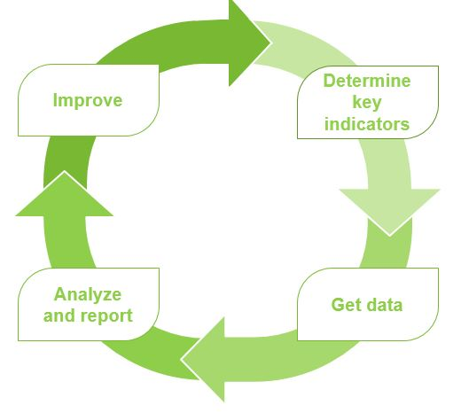

Health Infobase Design Manual
Table of contents
Performance measurement
On this page
Performance measurement is a way to collect and analyze data to determine if a product is achieving its objective or goals.
Performance measurement cycle

Determine key indicators
In this section of the cycle, you:
- decide what to measure
- start from your product roadmap and clarify the objectives of the product
- determine what success looks like: what you want visitors to do with your content, and the main tasks you want them to complete
-
get your web analyst involved early in the process
- At this stage, they can help you set goals and determine the best way to measure them.
- You need to define measures that clearly describe your goals early on in order to properly analyze and gain insights later in the cycle.
These decisions drive what data is collected and measured.
Get data
This is the phase where we start collecting data.
Here are some of the web analytics metrics we can measure.
- Number of Visitors
- How many visitors came to your page
- Number of Visits
- How many times your page was visited
- Referrals
- How did people come to your page (search engine, partner website, stakeholder email, etc.)
- Time engaged on page
- How long was the visitor actively viewing the page
- Page scroll
- How far down the page did the visitor reach
- Element viewed Timer
- How long did the visitors spend using key visualizations on the page (maps, graphs, tables, etc.)
- Dropdown selections
- How often were dropdown selectors used on the page
- Outbound link clicks
- How often were links directing visitors to external web pages clicked
- Copied text
- How often and what specific text on the page was copied to clipboard
- Session recordings
- Video output of how the visitor viewed your page, showing where they clicked, mouse movements and scrolls. It’s like sitting behind someone as they interact with your page. These can help assess whether visitors are interacting with the product in the way we intended, find out which elements are working, and find areas to improve upon.
Analyze and report
In this section of the cycle, you:
- organize data into readable reports about performance and success
- extract meaningful insights on how to improve performance
- use the analysis to make data-based decisions
- try to determine what changes can be made to your content or design to make it more effective
If you didn’t meet your objectives, that's okay. Apply lessons learned to the next release or update.
Improve
In this section of the cycle, you:
- use insights from analysis as a trigger to start an improvement process
- add other data sources to figure out how to improve the product
It’s an iterative process: keep monitoring the data, and keep improving the product.
See Continuous improvement for details.
- Date modified: